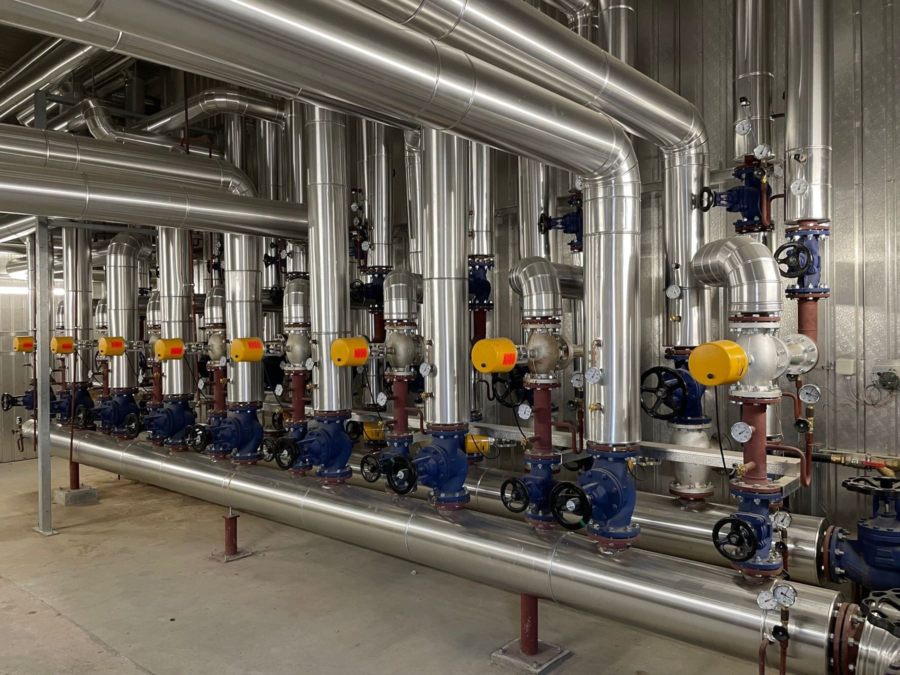
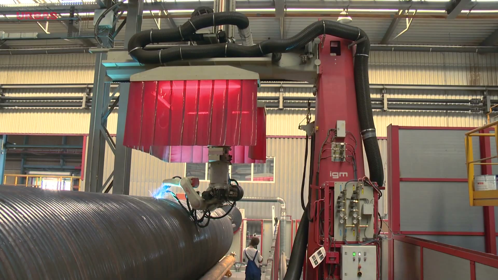
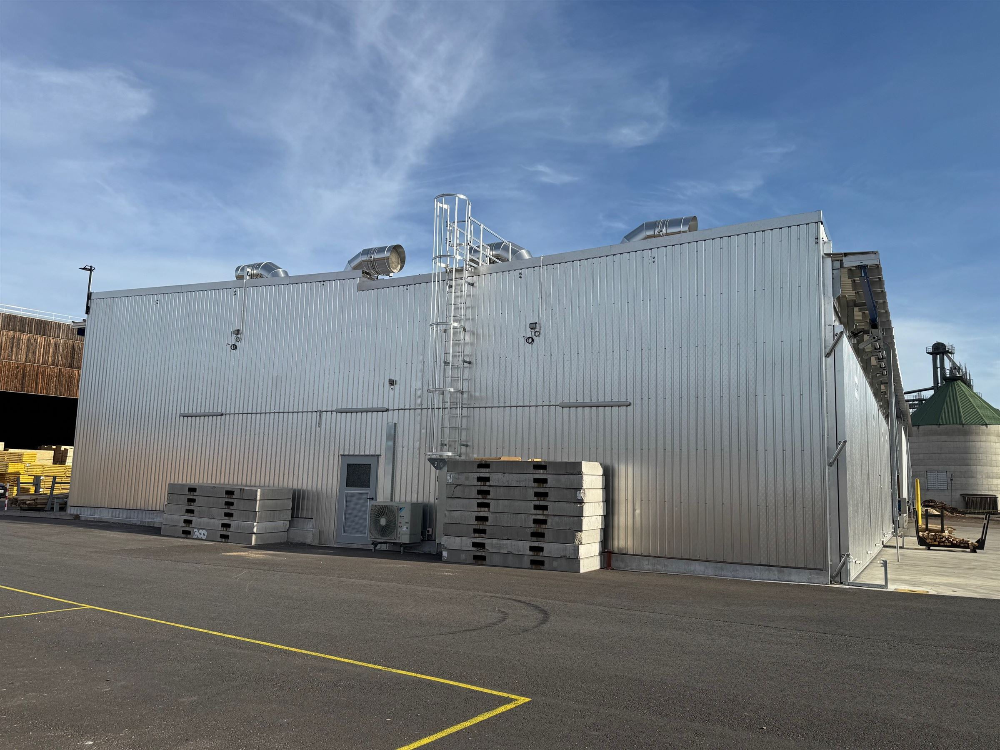
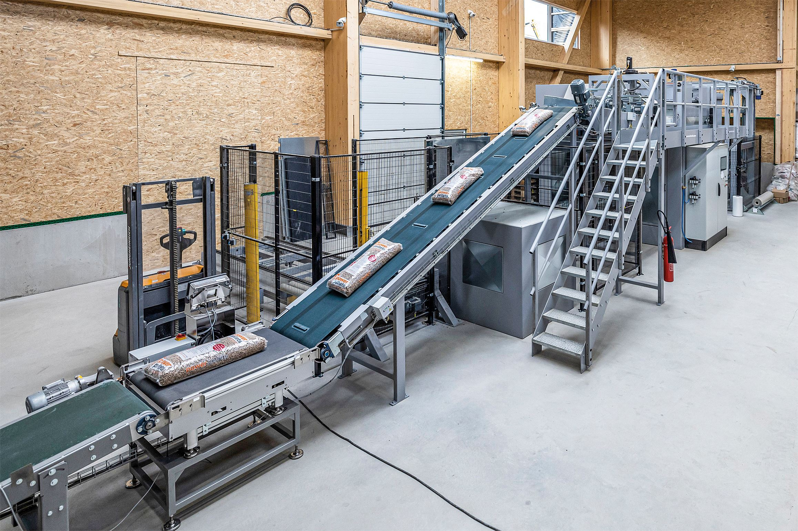
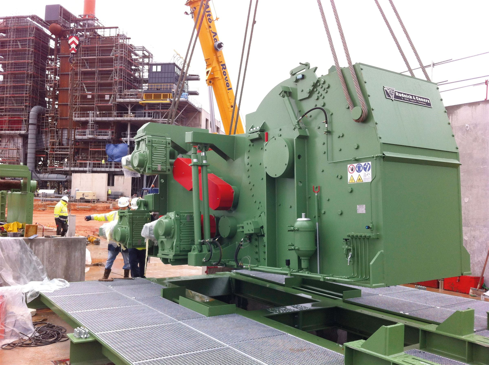

02 — Valorisation énergétique
Chaque connexe de sciage — écorces, sciures, chutes — devient une ressource. Nous concevons des lignes complètes de valorisation énergétique du bois, de la chaudière à la cogénération.
Notre approche
La scierie produit naturellement des connexes — écorces, sciures, chutes de sciage. Plutôt que de les traiter comme un déchet, nous les intégrons dans une boucle énergétique : ils deviennent le combustible qui sèche votre bois, chauffe vos bâtiments ou produit de l'électricité. Nos partenaires sont les leaders européens de la chaudière biomasse et de la cogénération.
Les équipements
Chaque projet combine différemment ces équipements selon votre production de connexes et vos besoins en chaleur ou en électricité. Cliquez pour explorer chacun.





André Technologies — équipement associéEn atelier
Chez notre partenaire Urbas, chaque cuve est soudée et assemblée sur mesure avant d'être intégrée à votre installation de chaudière ou de cogénération. Extrait tourné en atelier de fabrication.
Pourquoi valoriser vos connexes
La valorisation énergétique n'est pas qu'une question d'image : c'est un vrai levier économique et opérationnel pour une scierie.
Sécher son propre bois avec ses propres connexes réduit la dépendance aux énergies fossiles et leur volatilité de prix.
Écorces, sciures et chutes cessent d'être un coût d'évacuation pour devenir une ressource productive.
Selon le volume de connexes disponible, une installation biomasse s'amortit souvent sur quelques années d'exploitation.
Un projet bois énergie ?
Notre bureau d'études évalue avec vous le potentiel énergétique de votre production et dimensionne l'installation adaptée.